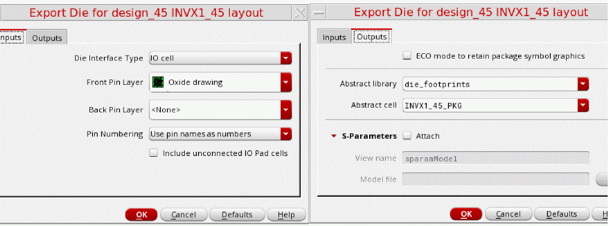

Types of Libraries
Unified libraries are crucial to enabling all the Virtuoso multiple technology flows. These libraries exist in the following forms and must be imported or created.
-
Allegro views and self- contained SiP files are imported by the
libImportutility to create abstracts for padstacks, LGA/BGA packages, discrete devices, and dies. - Virtuoso IC abstracts are created by Die Export.
- Vendor libraries of discrete devices are imported through CSV Import.
Here are the following types of libraries:
- Exported Die Library
- BGA Library
- Tline Library
- pkgLib Library
- Passive Component Library
- CSV Import Library
Exported Die Library
Exporting a die from a Virtuoso layout generates the following data:
- Abstract: This contains the instances of the padstack that correspond to the IO cell or shape-based interfaces in the source IC layout. The terminal names in the abstract view correspond to the physical domain names.
- Symbol: This corresponds to the logical interface of the physical footprint of the exported die. The terminal names in the symbol view correspond to the logical domain names.
- Schematic: This is the mapping schematic between the source IC symbol view and the exported symbol view. The duplicate pins in the source IC layout are made unique. Therefore, this mapping schematic has connectivity from the unique interface of the exported die to the generic interface of the source IC.
- Layout: This is the placeholder die TILP cellview.
Exporting the die also creates one cell for each unique padstack used in the die abstract. Consequently, the following views are created for the padstack:
Preparing for Die Export
To prepare the die for ensuring that the die abstract is accurate before using it in the package:
-
Set the cellType to
coverBumpfor the cells that contain the bump instances.
-
Update the connectivity information for the bump cells.
-
Define
prBoundaryat all the levels of the design.
Cells that are not defined as coverBump are not extracted while exporting the die.
Exporting the Die
This is the step in the flow where the IC/die footprint is handed over to the package designer. By exporting the die, you can create technology-independent abstraction, which enables co-design, layout versus abstract (LVA) checks, and cross-fabric simulation using die schematic and model-based simulation for dies.
- Open the IC/die layout.
- Click Module – Export Die.
-
Set the options in the Export Die form. Alternatively, use vrfExportLayoutSkill.
You must specify the Front Pin Layer on the Inputs tab while defining the inputs for exporting the die. Most of the options are already set by default in the form. - On the Outputs tab, specify the options for the die abstract.
After exporting the die, you can edit the die layouts and die abstract TILPs that are part of the same package by using the Co-Design feature.
Die export includes the following tasks when IO cell is chosen as the Die Interface Type in the Export Die form:
-
Extracts the IO Cells (bump/pads) from a given die/IC layout hierarchy and ensures that any duplicate pin names are made unique. For example, if there are two pins named as
VSS<1>, they are mapped asVSS_EXTRA0<1>andVSS_EXTRA1<1>. - Connects the front-end hierarchy of the exported die to the front end hierarchy of the other die. You can to access the IC schematic hierarchy when the die is instantiated in a package.
The summary report generated after die export contains information about whether the IO Cells are connected, unconnected, or invalid based on the Front Pin Layer value. It also warns about any IO Cells that contain layers different from the Front Pin Layer value.
Die export includes the following tasks when Shape with overlapping label is chosen as the Die Interface Type in the Export Die form:
- Exports die for shape-based layouts.
- Accepts pin layer purpose pair and label layer purpose pair only for the front and back side.
- Extracts pins based on the shapes. In shape-based layouts, a shape is exported as a pin with a name the same as the text of the overlapping label. For a shape to be exported as a pin,
After exporting the die, the summary report is printed, which describes the number of labels found with and without overlapping shapes for the front side and back side layers.
Labels with overlapping shapes:
Labels without overlapping shapes:
BGA Library
Ball grid array (BGA) is a type of die component whose pins are solder balls arranged in a grid pattern. For an effective use model, group multiple BGAs within a part table.

Tline Library
The Tline library contains the symbol view, simulation view, and OA layout view for TLines. You can instantiate the symbol views and capture connectivity in the package schematic. Tline components are derived from rfTlineLib, which is a library of wideband-accurate transmission line models in multi-conductor microstrip and stripline configurations.
pkgLib Library
The pkgLib library contains wirebonds and fingers. These are stored as TILPs in the library for use in the Virtuoso MultiTech Framework. The mapping from Virtuoso instance parameters to Allegro symbol parameters is provided in the TILP parameter mapping.
Passive Component Library
The passive library contains different topologies of inductors to be implemented as generic TILPs in Virtuoso.
CSV Import Library
The CSV library describes the part variants as CDF parameters in Virtuoso. There is a need to support .csv import functionality for vendor-provided SMD libraries. The component definitions are created with the name-to-number mapping for pins. Subsequently, you can create the base cellview and the TILP that can be instantiated in the layout views.
Return to top